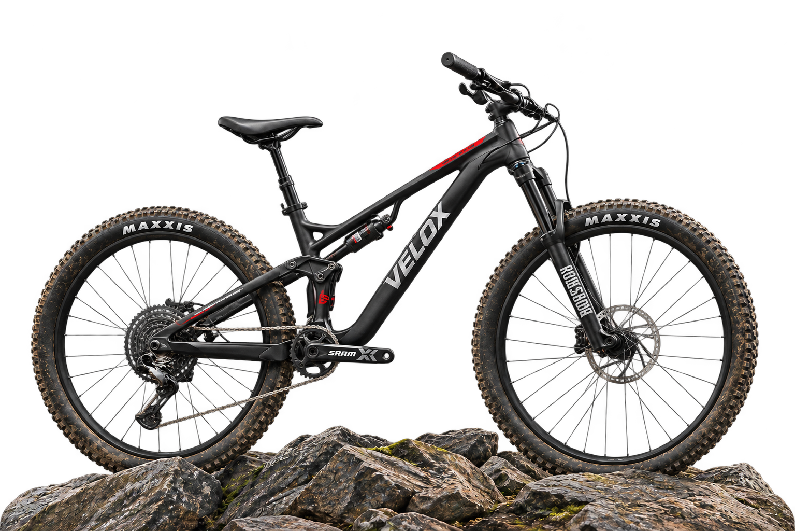
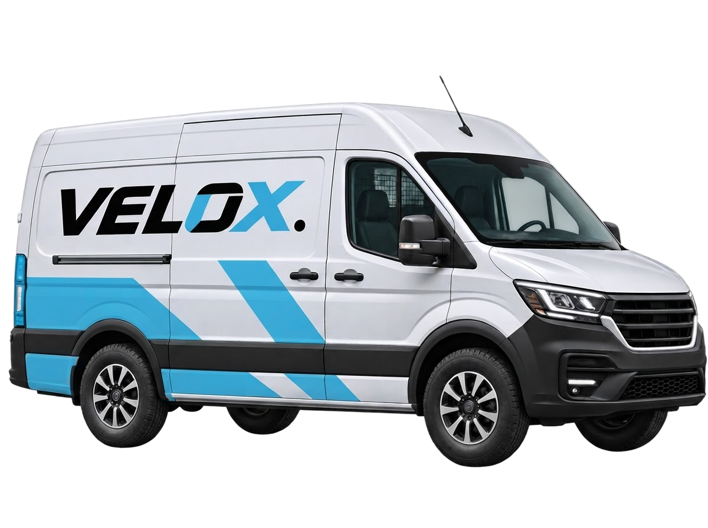

ДВИГАЙСЯВ СВОЁМ РИТМЕ
Городские, горные и шоссейные
модели с доставкой по Казахстану

↓ О БРЕНДЕТри типа велосипедов
Для асфальта, грунта и шоссе
Размер под твой рост
Сверим раму и удобство посадки
Советы по уходу
Подскажем, как обслуживать технику
МОДЕЛЬНЫЙ РЯД
СРАВНИ МОДЕЛИ
ПОД СВОИ ЗАДАЧИ
От 7 до 22 скоростей
Алюминиевые и карбоновые рамы
Сравни вес и комплектацию
Если сомневаешься в размере рамы,
О VELOX
ПОДБОР ПОД РОСТ
И ТИП ПОЕЗДОК
У городской поездки и выезда на грунт разные требования к технике. В VELOX мы помогаем связать характеристики с тем, как ты собираешься кататься.
- Покажем отличия комплектаций
- Уточним размер по геометрии рамы
- Подскажем порядок настройки и ухода
ДОСТАВКА ПО КАЗАХСТАНУ
ДОСТАВКА
В ТВОЙ ГОРОД
Назови город. Мы уточним способ получения, стоимость и срок до подтверждения заказа.

- 01
Сообщи модель
Уточним размер и комплектацию
- 02
Назови город
Обсудим способ получения и стоимость
- 03
Проверь заказ
При получении сверь комплект и состояние
ОТВЕТЫ НА ВОПРОСЫ
ПЕРЕД
ПОКУПКОЙ
Разберись с размером и условиями
обслуживания до заказа
Как определить размер рамы?
Размер зависит от роста и геометрии модели. Сообщи свой рост при консультации, чтобы мы могли уточнить раму и посадку.
Велосипед приедет собранным?
Степень сборки зависит от способа перевозки. Перед заказом уточним, что останется установить после получения.
С чего начать, если покупаю впервые?
Начни с типа дорог и бюджета. Расскажи, будешь ли ездить на работу, кататься по грунту или тренироваться на шоссе. Сравним подходящие варианты.
Что покрывает гарантия?
Срок, покрытие и исключения зависят от модели и компонента. Перед покупкой уточни условия и документы для обращения.
Какой уход нужен после покупки?
Проверяй давление в шинах и работу тормозов, очищай и смазывай цепь. Частота обслуживания зависит от пробега и условий катания.
ЛИЧНАЯ КОНСУЛЬТАЦИЯ
ПОДБЕРЁМ МОДЕЛЬ
ДЛЯ ТВОИХ ПОЕЗДОК
Заполни форму. Мы позвоним, уточним рост и бюджет и предложим варианты под твои дороги.
Можно оставить заявку без выбранной модели.